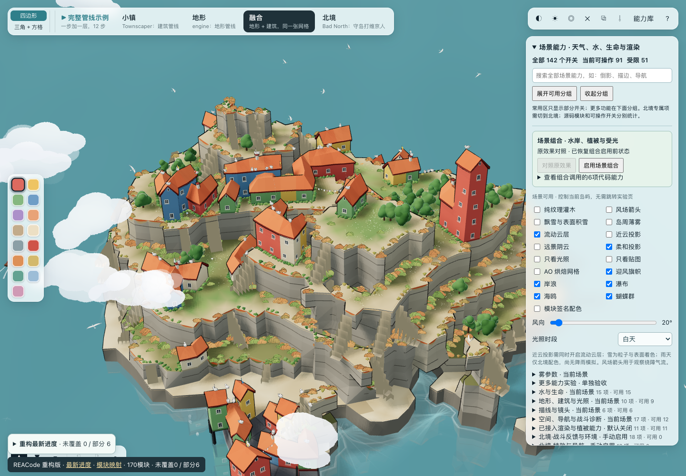
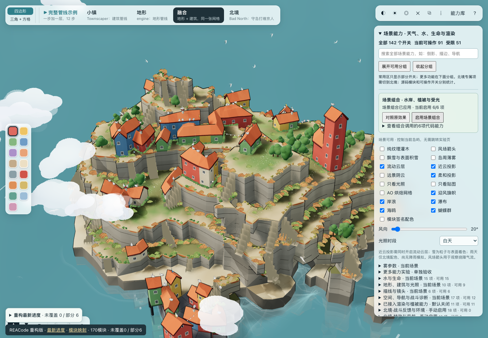

移动云影、台地/墙面/洞内纹理阴影、局部风场旗帜、墙根折卡灌木、草丛背景反差描线、随崖高变化的灌木边带。小镇、地形和融合首页默认启用；北境保留独立表现。对照按钮恢复启用前开关与灌木参数，不写World或用户存档。


同一相机、同一World和主体几何；云、海鸥等仍在动画，图像不能当逐像素差分。首版灌木边带过宽过亮，保留first-wide-band.png；最终收窄并减淡。
菜单142个控制开关，融合场景91个当前可操作、51个场景/依赖受限；这些是控制入口数量，不是算法或源码模块数量。支持搜索、分组数量和展开/收起，5个原URL专属C11功能新增真实控件。
真实六项接入/对照/参数恢复/主体保全/北境边界 · quad/mixed双网格菜单、11post、45北境与移动边界回归
GLSL/pageerrors=[]。统一五组20261113T145408433032Z全PASS。帧计数仅是抽样，不作为长时性能结论。